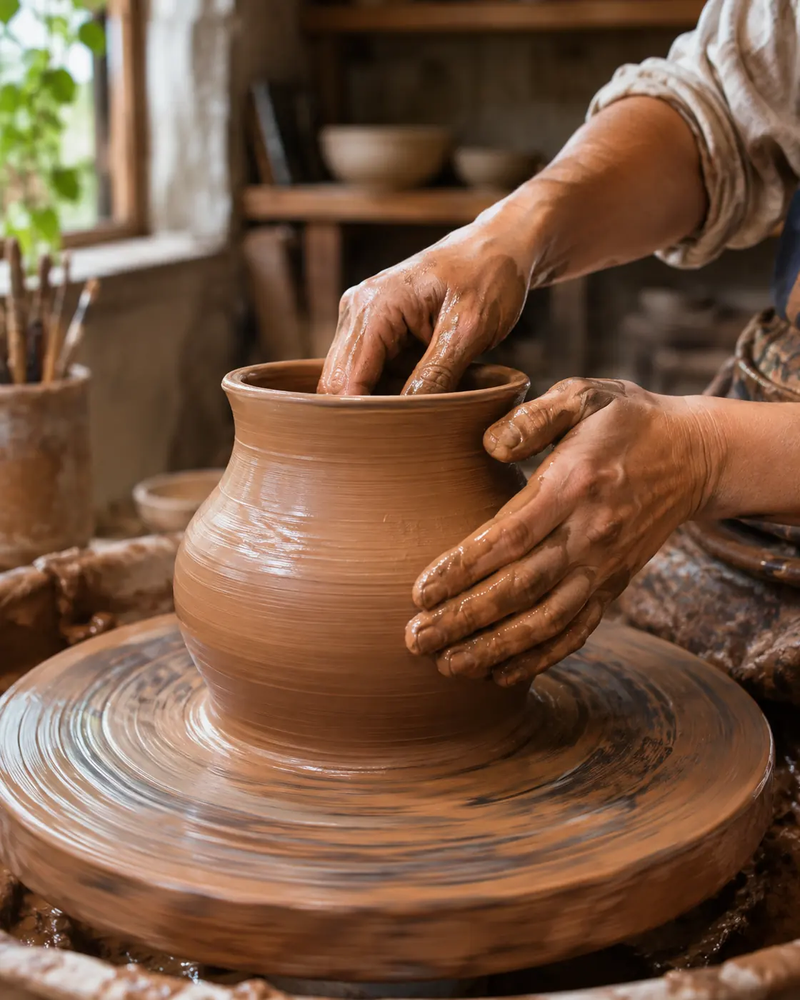
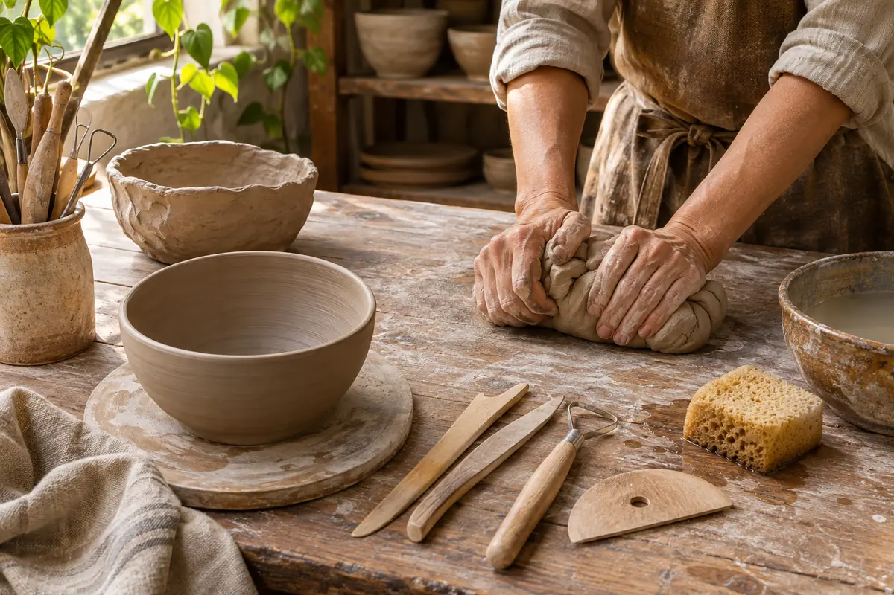
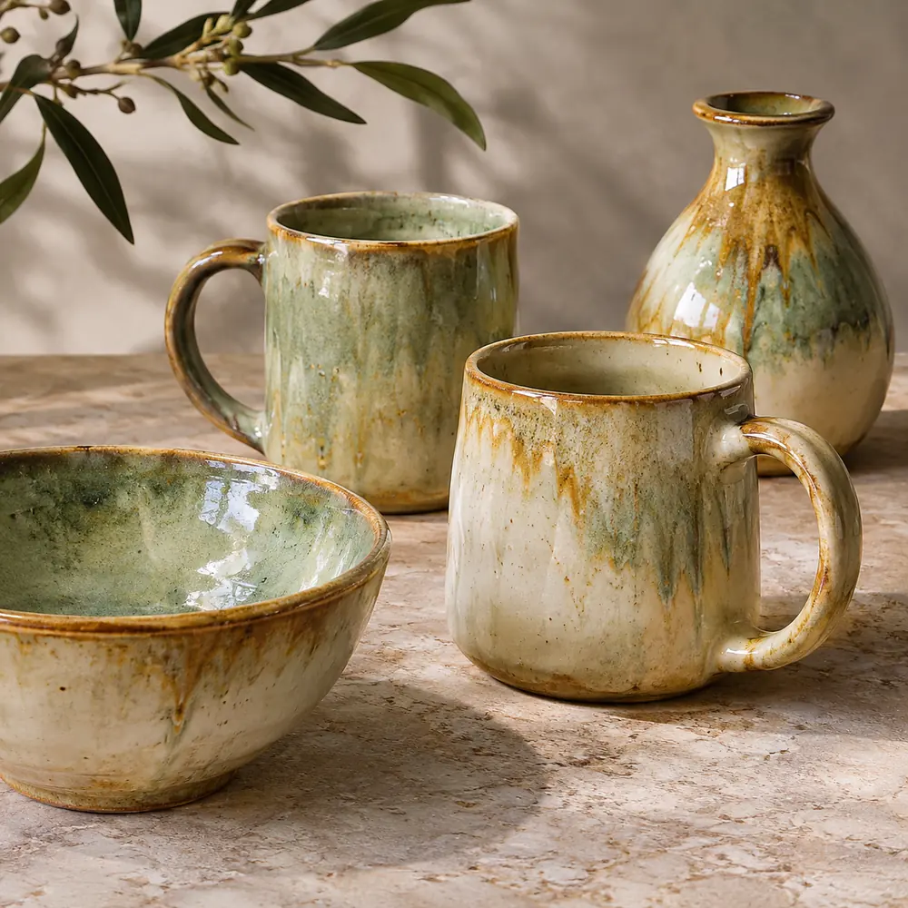

Taller de cerámica · grupos chicos
Tu primera pieza, en cuatro clases.
Sin experiencia previa y con los materiales incluidos. Elegís el día que te queda cómodo y empezás con las manos en el barro.


Las clases
Del barro a una pieza terminada.
Un recorrido simple, un paso por clase. Cada pieza se hace a mano y se cuece en el taller.
- 01Modelado a mano
Aprendés a amasar y a levantar tu primera forma.
- 02Terminaciones
Alisado, texturas y detalles de tu pieza.
- 03Esmaltado
Elegís colores y esmaltás con la guía del taller.
- 04Retiro
Después de la cocción, te llevás tu pieza.

Qué incluye
Lo que necesitás para empezar, sin comprar nada aparte.
- Barro, herramientas y delantal durante las clases
- Cocción en horno y esmaltado de tu pieza
- Acompañamiento de quien dicta la clase
- Grupos chicos, para que haya atención en cada mesa
Preguntas
Antes de venir.
¿Necesito experiencia previa?
No. Las clases están pensadas para quienes empiezan.
¿Qué tengo que llevar?
Ropa cómoda que pueda ensuciarse. El resto lo ponemos nosotros.
¿Cómo consulto por un lugar?
Por WhatsApp: elegís el día que te queda cómodo y coordinamos.
Tu primera pieza empieza con una consulta.
Contanos qué día te queda cómodo y armamos tu lugar en el próximo grupo.
Consultar por una clase